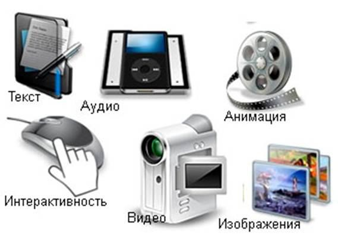
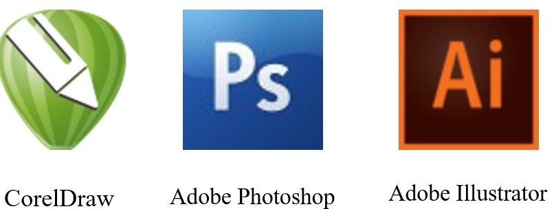

3. Создание мультимедийных картографических произведений
3.1. Принципиальные особенности и методы создания мультимедийного картографического произведения
Принципиальной
особенностью мультимедийных произведений является интерактивность и
использование в них гиперфайлового принципа организации массивов и связи данных.
Поэтому при их создании разрабатывается детальная структура, в которой указаны
все карты и мультимедийные объекты, их взаимодействие, на картах выделяются
интерактивные объекты, указываются связи между элементами карты и
мультимедийными объектами, описывается структура главного и вспомогательных
меню, обеспечивается наличие библиотеки
объектов и поисковой системы.
Второй
важной особенностью создания мультимедийных карт является послойное
представление информации по временному фактору. Например, если представлено
несколько карт одной территории, отображающей различные временные периоды, то
логичным является применение временной шкалы, позволяющей наглядно отобразить
развитие во времени и произвести визуальную оценку изменений. Шкала разбивается
на отдельные отрезки, обычно отображающее одинаковые временные интервалы, также
на ней могут быть нанесены метки ключевых событий, которые позволяют перейти к
фрагменту нужной карты. Использование слоев позволяет лучше проанализировать
состояние местности путем наложения нескольких карт на одну и ту же
территорию.
Еще одна особенность
мультимедийного картографического произведения связана с учетом способа их
последующего использования и распространения.
От
него зависят пороговые объемы данных, которых необходимо придерживаться, чтобы
пользователь мог без длительного ожидания осуществлять просмотр, если
производится распространение через интернет, либо чтобы объем информации
помещался на наиболее распространенные носители, если производится
тиражирование. Также при просмотре продукта через интернет крупные произведения
обычно разделяется на части, которые подгружаются по мере надобности, тем самым
уменьшая объем передаваемых данных, поскольку разным пользователям могут
понадобиться разные блоки и загружать сразу все элементы часто нецелесообразно.
Наиболее просто выделить для загрузки отдельные карты, элементы описания,
фотографии и видеоролики, более сложным решением является разделение большой
карты на набор небольших элементов (тайлов), которые динамически подгружаются
при перемещении точки просмотра или изменении масштаба.
И, наконец, при создании мультимедийного картографического произведения необходимо разработать необходимые технические решения по введению, связи и воспроизведению картографических и мультимедийных элементов, обосновать выбор форматов представления данных и применяемых программных средств [8].
3.2. Базовые составляющие мультимедийной картографии
Основными составляющими мультимедиа, которые используются в мультимедийной картографии, являются: текст, аудио, фото- и графические изображения, анимация, видео, интерактивность (рис. 33).

Рис.
33. Основные
составляющие мультимедиа
Аналогом линейного
способа
представления может являться кино. Человек, просматривающий данный документ,
никаким образом не может повлиять на его
воспроизведение.
Нелинейный
способ
представления информации позволяет человеку участвовать в выводе информации, взаимодействуя каким-либо
образом со средством отображения мультимедийных данных. Участие человека
в
данном процессе также называется интерактивностью. Такой способ взаимодействия
человека и компьютера наиболее полным образом представлен в
категориях компьютерных игр. Нелинейный способ представления мультимедийных
данных иногда называется «гипермедиа».
В качестве примера различия линейного и нелинейного способа представления информации можно рассматривать процесс проведения презентации. Если презентация была записана на носитель и показывается аудитории, то при этом способе доведения информации, пользователи, просматривающие данную презентацию, не имеют возможности влиять на докладчика. В случае же живой презентации, аудитория имеет возможность задавать докладчику вопросы и взаимодействовать с ним прочим образом, что позволяет докладчику отходить от темы презентации, например, поясняя некоторые термины или более подробно освещая спорные части доклада. Таким образом, живая презентация может быть представлена как нелинейный (интерактивный) способ подачи информации [8, 13].
3.3. Форматы и технологии представления графической информации в мультимедийной картографии
Поскольку
мультимедийные технологии очень разнообразны по своей сути, представляют собой
разные типы информации, используются в различных видах программного обеспечения,
то сначала проведем краткое сравнение форматов хранения графических данных, а
затем перейдем
к анализу технологий, которые могут использовать ранее
подготовленную мультимедийную информацию.
Графическая информация в мультимедийном картографическом произведении может быть представлена в следующих видах: растровые изображения, векторные изображения, трехмерные модели, анимации (рис. 34) [8, 16].
Рис. 34. Графическая информация в мультимедийном картографическом произведении
Исходные материалы
могут быть представлены в растровом либо векторном
формате.
Программы,
предназначенные для работы с растровой графикой, можно условно разбить на
несколько классов:
–
средства создания
растровых изображений: MS Paint, Corel Painter;
–
средства
обработки
изображений:
Adobe Photoshop, Corel PHOTO-PAINT, Paint Shop Pro, PhotoDraw и
др.;
–
средства захвата
экрана, начиная от поддерживаемой всеми операционными системами возможности
фотографирования содержимого экрана путем нажатия клавиши Print Screen или
комбинации клавиш Alt+Print Screen до специальных программ типа Corel Capture;
–
средства каталогизации
изображений: MS Imaging, Canto Gamulas Desktop и др. Эти средства предназначены
для создания графических баз данных в виде архивов изображений и фотографий. Их
каталогизация позволяет экономить время при поиске и отборе иллюстративного
материала. В настоящее время одна из таких программ – Canto Gamulas Desktop –
включена в состав девятой и десятой версий интегрированного пакета CorelDraw
(рис. 35).
Существует огромное
количество способов создания электронных изображений – начиная от сканирования
фотографий или рисунков и заканчивая изготовлением изображения «с нуля» с
помощью одного из многочисленных графических
редакторов. Ниже перечислены наиболее распространенные и широко известные
средства подготовки растровых изображений, как аппаратные, так и программные:
сканеры, цифровые камеры, видеосъемка, Photo CD, программы генерации текстур и
узоров, графические редакторы, анимационные программы, программы для создания
трехмерных изображений, программы для копирования фрагментов экрана. Обычно
создание растрового изображения включает в себя выполнение ряда последовательных
шагов. Их содержание, количество
и сложность будут зависеть от многих
факторов, включая физическую конфигурацию компьютера, набора аппаратных и
программных средств
и, наконец, от тех или иных спецэффектов, которые
планируется использовать для получения нужного изображения.

Рис. 35. Иконки программ, предназначенных для работы с растровой и векторной графикой
Наиболее
известными коммерческими редакторами векторной графики являются
Adobe
Illustrator и
CorelDRAW.
Adobe
Illustrator – пакет, позволяющий создавать, обрабатывать и редактировать
векторную графику. По своей мощности он эквивалентен растровому редактору Adobe
Photoshop: имеет аналогичный интерфейс, позволяет подключать различные фильтры и
эффекты, понимает многие графические форматы, даже такие как .cdr (Corel Draw) и .swf
(Flash).
CorelDraw
– известный графический пакет для обработки векторной
и растровой графики.
Пакет по своей мощности практически не уступает графическим редакторам Adobe
Photoshop и Adobe Illustrator. Помимо обработки векторной графики, в этом пакете
существует обработчик растровой графики (Photo Paint), трассировщик изображений,
редактор шрифтов, подготовки текстур и создания штрихкодов, а также огромные
коллекции с изображениями (CorelGallery). Adobe Streamline – еще один продукт
фирмы Adobe, предназначенный для трассировки (перевода) растровой графики в
векторную. Это небольшой, но очень полезный и мощный продукт. Он особенно
полезен при создании Web-страницы с использованием векторной графики, например,
технологии Flash.
Основным материалом для
создания мультимедийных картографических произведений обычно являются
традиционные картографические материалы в виде бумажных оригиналов,
диапозитивов, растровых изображений, векторных карт и т. п. Поскольку
большинство программ работы
с анимацией представляют собой варианты
векторных редакторов, то при импорте в них картографических данных возникает ряд
проблем.
Обработка растров
зависит от самого изображения, растры хорошего качества обычно используются как
подложка без векторизации, что позволяет значительно сократить трудозатраты при
картографировании. Требования к качеству растров предъявляют, исходя из
назначения картографического произведения, его аудитории, актуальности,
значимости, присутствию инструментов интерактивного просмотра. Очистку растров
от «мусора» осуществляется либо в специализированном программном обеспечении
(EasyTrace, SpotLight), либо в графических редакторах (Photoshop, GIMP). Стилизация
изображений также предварительно производится в графических
редакторах.
Если же растровая карта
по качеству не удовлетворяет требованиям, то выполняется ее векторизация. Этот
процесс либо осуществляется в самой программе создания мультимедийной карты,
либо используется другое программное обеспечение, позволяющие осуществить
векторизацию более быстро и качественно.
Программное обеспечение
Adobe
Flash позволяет
импортировать векторную информацию из файлов, созданных в Illustrator и FreeHand. Если нужно загрузить
данные из CorelDraw, то обмен данными
осуществляется с помощью файлов формата .swf. Перенести данные из
ГИС обычно возможно только через формат .dxf; если импорт напрямую не работает
или дает неудовлетворительные результаты, то файлы .dxf загружают в какую-либо
издательскую программу и уже из нее сохраняют файлы, пригодные для Flash.
Трехмерные изображения
в мультимедийных картографических произведениях, как правило, реализованы в виде
заранее подготовленных видеороликов. Использование 3D движков, созданных для
Flash, обычно
ограничивается интерактивным осмотром трехмерного
объекта.
Еще одной технологической составляющей мультимедийной карты является таблица (легенда) условных знаков. Легенда для мультимедийной карты, с одной стороны, должна отображать все виды условных знаков, имеющихся на карте, а с другой – должна быть достаточно компактной и простой для восприятия, поскольку обычно такие карты используются неспециалистами [8, 11, 26, 27].
3.4. Технологии представления мультимедийной информации
Наиболее распространенными технологиями представления мультимедийной информации и приложений в настоящее время являются технологии Flash и HTML5 [8, 26, 27], иконки которых представлены на рис. 36.
Рис.36. Иконки технологий представления мультимедийной информации
|
|
Adobe
Flash позволяет работать с
векторной, растровой и ограниченно с трехмерной графикой, а также поддерживает
двунаправленную потоковую трансляцию аудио и видео. Для КПК и других мобильных устройств выпущена
специальная «облегченная» версия платформы Flash
Lite,
чья функциональность ограничена в расчете на возможности
мобильных устройств и их операционных систем.
В основе анимации во
Flash лежит векторный
морфинг, то есть плавное «перетекание» одного ключевого кадра в другой. Это
позволяет делать сложные мультипликационные сцены, задавая лишь несколько
ключевых кадров. Производительность Flash
Player при воспроизведении
анимации в несколько раз превышает производительность виртуальной машины
Javascript в браузерах,
поддерживающих предварительный стандарт HTML 5, хотя во много раз
уступает приложениям, работающим вообще без использования виртуальных
машин.
Flash использует язык
программирования ActionScript, основанный на
ECMAScript.
HTML 5 – это целый стек
(набор) технологий, включающих в себя jQuery, AJAX, CSS и самый простой
JavaScript. Подобно этому, Flash – это больше чем просто формат файлов *.swf.
Flash – это полноценная платформа, включающая в себя серверные компоненты,
средства авторизации, протоколы, бинарные форматы, поддержку кодеков, а также
каналы обмена данных в такие серверные решения, как Livecycle Data Services и
Flash Media Server.
В большинстве случаев,
основанные на Flash приложения размещаются в интернете так, что они находятся
внутри HTML контейнеров. Зачастую в работе используется JavaScript. Из этого
можно сделать вывод, что HTML и Flash отлично работают в едином комплексе, при
этом Flash зависит от HTML в том, что, как правило, на web-странице требуется
наличие HTML-контейнера.
Хотя
завершение работ над спецификацией HTML 5 намечено на 2024 г., новый стандарт
настолько востребован, что все современные браузеры уже поддерживают его
наиболее важные части. Тег canvas – одно из главных новшеств HTML 5. С его
помощью можно встраивать в страницы векторную графику и управлять ей при помощи
JavaScript. В сочетании с тегами video и audio он позволяет полностью избавиться
от плагинов вроде Adobe Flash или Microsoft
Silverlight.
Создатели Flash одно
время надеялись, что от встраивания в страницу флэш-окошек, с анимацией
веб-разработчики постепенно перейдут к созданию целых сайтов на Flash, однако
этого так и не произошло. Flash все так же плохо сочетается с веб-страницами и
интерфейсом браузера, как
и раньше.
Примеров плохой
совместимости множество. Сайты, сделанные на Flash, игнорируют браузерные кнопки
«назад» и «вперед», из флэша невозможно вынуть картинку и перетащить ее в другую
программу, по тексту нельзя использовать поиск, встроенный в браузер, да и
поисковики хуже индексируют содержимое роликов, чем обычный
HTML.
Зато плюсы Flash,
которые были важны в 1990-е гг., сегодня выглядят не столь актуальными.
Собственный формат плеера Flash помогает уменьшить размер роликов – во времена
модемного соединения это было крайне востребованным свойством. Сегодня векторную
анимацию почти всегда можно заменить на видео, и пользователи даже не заметят
разницы в скорости загрузки.
Объем роликов и
производительность плеера по-прежнему важны, когда речь идет о мобильных
устройствах, но и тут дела у Adobe идут не особенно хорошо. Главная проблема
связана с Apple, запрещающей делать плеер Flash для iPhone OS.
С ростом использования
HTML 5, мультимедийные web-технологии становятся
все больше похожими друг на друга, например, появился тег video. В этом
вопросе существует ряд определенных требований, которые основаны как на
возможностях браузеров, так и на возможностях интернет-каналов. Платформа Flash
накопила огромный опыт по работе
с видеоконтентом, позволяя предоставлять
видео в максимальном качестве, на основе таких перечисленных выше данных, как
возможности
интернет-канала и браузера. Это требует определенных серверных
технологий и средств коммуникаций. HTML 5 – это все же язык разметки
и может
не справляться с поставленным задачами так же хорошо, как Flash Player до тех
пор, пока не будут созданы соответствующие серверные
технологии.
В любом случае выбор
остается за потребителем. Millennial Media недавно опубликовала данные, что
телефоны на базе Android составили 46 % рекламного трафика в их сети, в то
время как устройства от Apple лишь 32 %. Android устройства, которые уже с
версии 2.2 поддерживают Flash, являются вторыми по популярности и будут
становиться еще популярнее [26, 27].
По результатам
рассмотрения технологий Flash и HTML5 с позиции создания
мультимедийных картографических произведений можно сформулировать их следующие
достоинства и недостатки.
Достоинства
Flash:
–
возможность работы
созданных приложений на большом количестве программно-аппаратных
платформ;
–
широкий спектр
используемых мультимедийных форматов данных;
–
различные средства
редактирования векторных данных;
–
имеются инструменты для
создания анимационных эффектов.
Недостатки
Flash:
–
очень
большие трудности использования систем координат и высот;
–
трудности
редактирования компонентов уже готового приложения;
–
трудности с реализацией
поисковой системы внутри приложения;
–
необходимость в
конвертации и обработке файлов, распространенных ГИС-приложений для
использования в Flash-приложении;
–
ограниченность
использования Flash-приложения совместно с
другими технологиями и сервисами.
Достоинства
HTML
5:
–
очень большой выбор
используемых технологий для создания и использования картографических
приложений;
–
возможность
использования любых картографических систем координат и высот посредством
серверного картографического приложения;
–
наличие большого числа
модулей и библиотек для создания и использования картографических приложений;
–
большие возможности
использования данных из других картографических и информационных
сервисов;
–
как
правило, отсутствие необходимости в конвертировании уже готовых файлов карт,
распространенных ГИС-приложений, в том числе
и пространственных баз
данных;
–
возможность применения
различных пользовательских стилей отображения для объектов пространственной
модели;
–
модульность приложений
и, как правило, простота редактирования каждого модуля по
отдельности.
Недостатки
HTML 5:
–
необходимость выбора
наиболее подходящих по функциональности и производительности технологий,
компонентов и средств разработки;
–
как
правило, необходимость серьезного изучения web-технологий с точки
зрения web-разработчика;
Сопоставление
и возможности указанных технологий можно оценить применительно к различным
картографическим и мультимедийным объектам.
Интерактивные
карты:
при отображении исторических событий интерактивная карта используется наиболее
часто, технология Flash позволяет получить
более эффектный вариант с меньшими затратами, но HTML5 позволяет проще и
корректнее работать с координатами, плюс сейчас появилась такая вещь, как
geolocation, то есть сайт может запросить у встроенного в устройство GPS
приемника координаты и сразу отобразить участок карты вокруг пользователя.
Галереи
изображений: галереи на
Flash и HTML5 сейчас примерно
одинаковы как по визуальным эффектам, так и по функциям, и для той,
и для
другой технологии существует очень большое количество готовых шаблонов и
мастеров создания галереи, они основаны как на стандартных средствах, так и на
сторонних наборах библиотек. Галереи могут использоваться для более наглядного
отображения окружающей местности, возможно совмещать одновременно историческую и
действительную картины, показывать на карте направление взгляда
смотрящего.
Панорамные
изображения: на данный момент
абсолютное большинство виртуальных туров и сферических панорам созданы с
использованием технологии Flash, их возможно сделать
как полностью вручную, так
и с помощью различных сторонних программ,
генерирующих результирующий swf-ролик; для
HTML 5 используются
свойства CSS 3D
transform и effects, но эти свойства и
методы поддерживаются по-разному в разных браузерах, на сегодняшний день полно их
поддерживает Safari
для Mac
OS.
Трехмерные
объекты: статичные или
анимированные неинтерактивные сцены можно отобразить с помощью обеих технологий,
также возможно реализовать простую интерактивность в HTML5 (покрутить,
приблизить/удалить один-два объекта), для реализацией более сложных
интерактивных сцен, игр сейчас лучше справляется Flash, используя такие
трехмерные движки, как Papervision3D или AlternativaPlatform, которая пользуется
последними достижениями технологии Molehill, использующей для
рендеринга сцены все аппаратные средства компьютера.
Линии
времени: используя JavaScript, можно добиться
примерно одинаковых результатов, поэтому на Flash можно это сделать, приложив
меньше усилий.
Управление: управление роликом не
только с помощью мыши и клавиатуры позволяет задействовать другой уровень
сенсорного восприятия и более полно осознать получаемую информацию и лучше ее
запомнить.
Дополненная
реальность: отображение
информации, исторического вида при наведении камеры на объект. В этом
направлении технологии сейчас развиваются примерно на одном уровне и в одном
направлении
и требуют примерно одинаковый уровень познания соответствующей
технологии.
Видео: Flash имеет собственный
формат и позволяет встраивать его
в файлы роликов, HTML5 – подбирать для
просмотра формат, наиболее подходящий под возможности системы и браузера
пользователя.
Рассмотрим типы
компьютерных картографических приложений.
Картографические
приложения по технологиям создания и использования и программно-аппаратным
средствам можно разделить на настольные (десктопные), web-приложения, или
web-сервисы, и мобильные.
Это достаточно грубое разделение, поскольку не всегда можно однозначно отнести
то или иное приложение к определенной категории, поскольку достаточно часто в
одном и том же приложении используются технологии из разных категорий, и оно
может функционировать практически одинаково на разных аппаратных
платформах.
Десктопные приложения –
это программы, логика работы которых требует наличия оператора (человека,
работающего с программой), содержащие в себе всю полную функциональность и
способные работать отдельно на любой машине изолированно от других приложений.
Microsoft Word, Excel, Блокнот, однопользовательские игры – все это примеры
десктопных приложений. Для их работы необходимы лишь достаточные аппаратные
ресурсы компьютера, само приложение и набор библиотек, содержащих функции для
работы с приложением.
Десктопные приложения
могут быть также и многопользовательскими. Например, редактор файлов, который в
зависимости от логина и пароля, введенных при запуске, будет давать доступ к
различным файлам.
И программа, и файлы находятся на одном компьютере, просто
производится локальное разграничение доступа для разных
пользователей.
Мобильное приложение –
это специально разработанное приложение под конкретную мобильную платформу (iOS,
Android, Windows Phone). Обычно приложение
разрабатывается на языке высокого уровня и компилируется в нативный код
ОС, дающий максимальную производительность.
Существует еще вариант
– мобильное приложение, включающее в себя компонент браузера. В этом случае
часть мобильного приложения чаще всего используется для навигации и интергации с
ОС, а web-компонент – для показа контента. Обычные пользователи не могут
зачастую отличить такой вариант от нативного мобильного
приложения.
Web-приложение – клиент-серверное приложение, в котором клиентом выступает браузер, а сервером – веб-сервер. Логика веб-приложения распределена между сервером и клиентом, хранение данных осуществляется, преимущественно, на сервере, обмен информацией происходит по сети. Одним из преимуществ такого подхода является тот факт, что клиенты не зависят от конкретной операционной системы пользователя, поэтому веб-приложения являются межплатформенными сервисами [8, 26–30].
3.5. Технологии оперирования мультимедийными данными
Потоковое мультимедиа
(от. англ. stream media) – это мультимедиа, которое непрерывно получается
пользователем от провайдера потокового вещания. Это понятие применимо как к
информации, распространяемой через телекоммуникации, так и к информации, которая
изначально распространялась посредством потокового вещания (например, радио,
телевидение) или непотоковой (например, книги, видеокассеты, аудио
CD).
Геотегинг (геотэгинг,
геотеггинг; гео от греч. γη, или греч. γαια «земля», англ. tag – «ярлык,
этикетка, бирка; метить») – процесс присоединения географических метаданных к
различным информационным ресурсам, таким как веб-сайты, RSS, фотографии,
как-либо характеризующие эти ресурсы (точка съемки, месторасположение и т. п.).
Эта информация состоит, как правило, из координат широты и долготы, хотя она
может включать также высоту, расстояние и направление до населенных пунктов.
Геотегинг может помочь в поисках различной информации, привязанной к
определенной местности. Например, можно производить поиск фотографий, сделанных
поблизости от определенного места путем ввода координат в поисковую систему с
поддержкой геотегинга. Поисковые системы с поддержкой геотегинга могут быть
полезными для поиска привязанных к определенному месту новостей, веб-сайтов или
других ресурсов. В подавляющем большинстве случаев в быту используется
геотеггинг фотографий.
AJAX, Ajax – подход к
построению интерактивных пользовательских интерфейсов веб-приложений,
заключающийся в «фоновом» обмене данными браузера с веб-сервером. В результате,
при обновлении данных веб-страница не перезагружается полностью, и
веб-приложения становятся быстрее и удобнее.
В классической модели
веб-приложения выполняются следующие действия:
1) пользователь заходит
на веб-страницу и нажимает на какой-нибудь ее элемент;
2) браузер формирует и
отправляет запрос серверу;
3) в ответ сервер
генерирует совершенно новую веб-страницу и отправляет ее браузеру и т. д.;
4) после этого браузер
полностью перегружает всю страницу.
При
использовании AJAX процесс осуществляется следующим
образом:
1) пользователь заходит
на веб-страницу и нажимает на какой-нибудь ее элемент;
2) скрипт (на языке
JavaScript) определяет, какая информация необходима для обновления
страницы;
3) браузер отправляет
соответствующий запрос на сервер;
4) сервер возвращает
только ту часть документа, на которую пришел запрос;
5) скрипт вносит
изменения с уче.том полученной информации (без полной перезагрузки
страницы).
Преимущества этого
подхода:
-
экономия трафика
(использование AJAX позволяет значительно сократить трафик при работе с
веб-приложением благодаря тому, что вместо загрузки всей страницы достаточно
загрузить только изменившуюся часть, или вообще только получить/передать набор
данных в формате JSON или XML, а затем изменить содержимое страницы с помощью
JavaScript);
-
уменьшение нагрузки на
сервер (при правильной реализации, AJAX позволяет снизить нагрузку на сервер в
несколько раз. В частности, все страницы сайта чаще всего генерируются по одному
шаблону, включая неизменные элементы («шапка», «навигационная панель», «подвал»
и т. д.), для генерации которых требуются обращения к разным файлам, время
на обработку скриптов (а иногда и запросы к БД) – все это можно опустить, если
заменить полную загрузку страницы генерацией и передачей лишь содержательной
части. Дизайн страницы также обычно содержит множество файлов, связанных с
оформлением (картинки, стили), на повторную обработку которых не надо тратить
время, используя AJAX (экономия на количестве HTTP-соединений значительно
выгоднее, чем на сокращении трафика каждого из них);
-
ускорение реакции
интерфейса (поскольку загрузка изменившейся части значительно быстрее, то пользователь видит
результат своих действий быстрее и без мерцания страницы (возникающего при
полной перезагрузке);
-
почти безграничные
возможности для интерактивной обработки (например, при вводе поискового запроса
в Google выводится подсказка
с возможными вариантами запроса. На многих
сайтах при регистрации пользователь вводит имя, и сразу же видит, доступно это
имя или нет. AJAX удобен для программирования чатов, административных панелей
и других инструментов, которые выводят меняющиеся со временем
данные).
Недостатки этого
подхода:
-отсутствие интеграции
со стандартными инструментами браузера (динамически создаваемые страницы не
регистрируются браузером в истории посещения страниц, поэтому не работает кнопка
«Назад», предоставляющая пользователям возможность вернуться к просмотренным
ранее страницам, но существуют скрипты, которые могут решить эту
проблему);
-другой недостаток
изменения содержимого страницы при постоянном URL заключается в невозможности
сохранения закладки на желаемый материал. Проблему можно успешно решить с
помощью History.pushState [8];
-динамически загружаемое
содержимое недоступно поисковикам (если не проверять запрос, обычный он или
XMLHttpRequest);
-поисковые машины не
могут выполнять JavaScript, поэтому разработчики должны позаботиться об
альтернативных способах доступа к содержимому сайта;
-старые методы учета
статистики сайтов становятся неактуальными (многие сервисы статистики ведут учет
просмотров новых страниц сайта. Для сайтов, страницы которых широко используют
AJAX, такая статистика теряет актуальность);
-усложнение
проекта (перераспределяется логика обработки данных – происходит выделение
и частичный перенос на сторону клиента процессов первичного форматирования
данных. Это усложняет контроль целостности форматов и типов. Конечный эффект
технологии может быть нивелирован необоснованным ростом затрат на кодирование и
управление проектом, а также риском снижения доступности сервиса для конечных
пользователей);
-требуется
включенный JavaScript в браузере (проблема в том, что использование JavaScript
может быть запрещено из соображений безопасности);
-AJAX-страницы
труднодоступны неполнофункциональным браузерам, роботам и
веб-архивам;
-низкая скорость при грубом программировании. (Казалось бы, AJAX предназначен именно для повышения скорости. Но, когда AJAX-запросов на одной странице много и, например, по каждому щелчку подгружается список, AJAX-страница становится даже медленнее традиционной [8, 26–30].)
3.6. Технология создания мультимедийного картографического произведения
Рассмотрим общую
технологическую схему создания мультимедийного произведения на примере создания
атласа географической тематики (рис. 37) [6, 8, 16].
1-й
этап.
Разработка проекта географического
мультимедийного атласа.
На этом этапе
разрабатывается задание на атлас и
формируется коллектив разработчиков атласа.
Задание на
атлас
включает:
–
пояснительную записку
(назначение атласа, обоснование его структуры, тематики, состава карт, указания
по сбору основных и дополнительных источников и
т. д.);
–
предъявляемые
требования и область применения атласа.
2-й
этап.
Разработка сценария
атласа.
Этот этап является важным подготовительным этапом
создания интерактивной мультимедийного атласа.
Сценарий
атласа
разрабатывается согласно названию, назначению, предъявляемым требованиям и
области его применения.
Разработка сценария
атласа
включает:
–
разработку макета
компоновки страниц и дизайна атласа в целом;
–
разработку содержания
атласа и структуру его разделов (тем);
–
разработка списка карт
по разделам (тем), который раскрывает структуру атласа;
–
разработка показателей
интерактивности при работе с картами
и мультимедийными
компонентами;
– проектирование структуры баз данных атласа.
Рис. 37. Общая технологическая схема создания географического мультимедийного атласа
3-й
этап.
Разработка (или выбор) комплекса
программных средств:
–
программного
обеспечения для создания атласа в целом;
–
программной оболочки
для интерактивного использования атласа;
–
программного
обеспечения для разработки топологии гиперссылок и страниц с мультимедийными
файлами.
При разработке
комплекса программных средств используется стандартное и специальное программное
обеспечение.
4-й
этап.
Редакционно-подготовительные и
составительско-офор-
мительские работы:
–
сбор и подготовка
материалов для атласа в целом;
–
обработка исходных
материалов;
–
разработка общих
требований к компьютерным условным
знакам
в статике и динамике, общим для всех карт;
–
составление и
оформление мультимедийных карт;
–
разработка топологии
гиперссылок и страниц гиперссылок с мультимедийными
файлами;
–
наполнение баз
данных.
5-й
этап.
Составление и изготовление интерактивного
мультимедийного атласа:
–
составление и
изготовление мультимедийных карт, входящих в состав
атласа;
–
отладка программной
оболочки для работы с атласом; изготовление мастер-диска атласа либо
распространение через интернет.
6-й этап.
Разработка руководства пользователя и тиражирование атласа:
–
разработка
эксплуатационной документации;
–
тиражирование
мастер-диска;
–
тиражирование
информации;
–
информация об атласе
(руководство пользователя атласом и сведения о разработчиках атласа) на бумажной
основе.
Основным документом географического мультимедийного атласа является сценарий атласа (рис. 38), в котором с помощью перекрестных гиперссылок используется несколько информационных мультимедийных сред и осуществляется совместная интеграция картографического изображения и другой информации мультимедиа. Для географической же мультимедийной карты основным документом, как и для традиционных карт, является программа карты, так как на этой карте картографическое изображение и мультимедийные элементы интегрированы в единой информационной среде.
Рис. 38.
Структурная схема
документации географического
мультимедийного
атласа
Следует
отметить, что атлас
с мультимедийной информацией создается на
web-страницах
с помощью языка гипертекстовых
разметок и программы, которые сопровождаются и управляются сценарием создания.
Сценарий обеспечивает активность гипертекстовых страниц, то есть представляет
методы обработки данных и компоновку страниц.
Сценарий
географического
мультимедийного атласа (ГМА) включает
[16]:
1.
Общие положения – обоснование назначения и содержание атласа; круг
потребителей; основные теоретические и практические задачи, на решение которых
рассчитан атлас.
2.
Порядок работы над атласом:
–
указываются
главные разработчики (институты, организации
и т. д.)
и их роль в совместной работе;
– формируется творческий коллектив (рис. 39);
Рис. 39. Творческий коллектив для создания географического мультимедийного атласа
–
определяются
поэтапные сроки работы над атласом и порядок проверки выполненной
работы;
–
уточняются
общие технические сведения (объем атласа – неограничен; характер создания – на
компьютере; особенности внешнего и внутреннего оформления атласа – обложка
футляра для хранения компакт-диска, оформление компакт-диска и единое оформление
гипертекстовых страниц).
3.
Структура атласа устанавливается в соответствии с принятым содержанием и
назначением атласа и с учетом аппаратно-программных
возможностей.
Вначале
составляется структурная схема атласа, на которой указаны все карты, их
взаимодействие, выделены интерактивные объекты на них, указаны связи между
элементами карты и мультимедийными объектами, описана структура главного и
вспомогательных меню, наличие библиотеки объектов, поисковой
системы.
Структура
атласа – сетевое построение, представляет собой набор картографической
(тематические слои), текстовой и мультимедийной информации, представленной на
отдельных гипертекстовых страницах в иерархическом расположении по степени
детализации.
Структура
и содержание страниц УМА:
–
страница с названием атласа – титульный
лист;
–
страница с общей характеристикой
произведения – напутственное слово от создателей атласа, в форме текста,
дикторской речи, в которой кратко говорится о содержании атласа и его
назначении;
–
страница с содержанием атласа
(оглавление) – название разделов или список карт, информация об атласе, в
которой даны краткие сведения о разработчиках атласа и инструкция (руководство)
пользования атласом;
–
страница – главное меню, которое содержит
название разделов или список карт, таблицу условных знаков, словарь
географических терминов и названий.
В
атласе должен быть продуманный, качественно оформленный интерфейс, то есть
мгновенный допуск к любой информации пользователь осуществляет с помощью
электронного содержания, гиперссылок, поисковой системы по ключевым
словам.
Рис. 40 иллюстрирует общую информационную структуру ГМА.
Рис. 40. Информационная структура географического мультимедийного атласа
4.
Обоснование тиража атласа. Тираж издания атласа зависит от охвата
картографируемого пространства (например, атлас материков и океанов, атлас
области, атлас города).
5.
Размеры атласа. Общие параметры атласа определяются видимой страницей и
разрешением экрана монитора.
6.
Источники для создания атласа. Даются перечень и анализ картографических
(традиционных, цифровых карт), статистических и литературных источников и других
материалов – видеосюжетов, звуковых эффектов среды обитания, фотографий,
рисунков, графиков и т. п., в том числе из интернет [6, 8,
16].
7.
Компоновка карт для проектируемого атласа обусловлена размером и
разрешением экрана монитора.
8.
Математическая основа карт в атласе. Может использоваться неограниченное
количество масштабов и картографических проекций.
9.
Список карт занимает центральное место в сценарии атласа, отражает
содержание атласа, его теоретическую и практическую направленность по принципу:
от общего к частному, от основных характеристик объектов и явлений к
дополнительной информации. Целесообразно определить базовый и расширенный набор
карт для дополнительного изучения материала.
10.
Перечень комплекса программных и аппаратных средств является очень важным
для этапа создания атласа. От подбора оптимальных аппаратных средств (например,
персонального мультимедийного компьютера, сканера, цифровой камеры, принтера и
т. д.) и программного обеспечения в целом зависит создание атласа, а также
возможность работы с ним в интерактивном режиме.
Для
создания атласа необходимо следующее программное
обеспечение:
–
базовое
программное обеспечение (оболочка) атласа в целом;
–
программные
средства для использования атласа;
–
программное
обеспечение для обработки разнородных данных вводимых в компьютер (сканирование,
векторизация, преобразование в цифровую форму и
т. д.);
–
программное
обеспечение для составления карт, разработки условных знаков в статике и
динамике (картографическая анимация);
–
программное
обеспечение для создания гипертекстовых страниц и формирования топологии
гиперссылок.
11.
Макет компоновки гипертекстовых страниц атласа передает внутреннее
оформление и содержание атласа.
Сценарий атласа и макет
компоновки гипертекстовых страниц рассматриваются и утверждаются главными
разработчиками и в дальнейшем являются обязательными для использования при
проведении этапа редакционно-подготовительных и составительско-оформительских
работ.
Редакционно-подготовительные
и составительско-оформительские работы по каждой
мультимедийной карте:
–
сбор и подготовка
материалов для карты в целом;
–
обработка исходных
материалов;
–
составление карты и
разработка компьютерного дизайна карты;
–
сбор и подготовка
мультимедийной информации;
–
определение связей
объектов мультимедиа с объектами карты;
–
разработка компьютерных
условных знаков в статике и динамике для карты;
–
наполнение базы
данных.
Составление и
изготовление каждой интерактивной мультимедийной карты:
–
составление
компьютерного оригинала карты;
–
принтерная распечатка
карты (контрольная) с условными знаками (в статике) и корректура карты на
бумажной основе;
–
корректура карты в
электронном виде (например, карты с условными знаками в динамике); редакционный
просмотр мультимедийной информации; исправление карты; добавление дополнительной
информации;
–
отладка модулей
программной оболочки для работы с картой;
–
запись карты на
техническом носителе либо распространение через интернет.
Тиражирование
мультимедийного картографического произведения и/или интерактивной
мультимедийной карты:
–
изготовление тиража
атласа или карты различными стандартными техническими методами и средствами [8,
16].
Общая технологическая
схема создания географического атласа
в 2003 г. была использована Е. В.
Комиссаровой [16] при создании следующих авторских макетов атласов для средней
школы:
– географический мультимедийный атлас материков и океанов (рис. 41);
41. Макет компоновки страниц (топология гиперссылок) географического мультимедийного атласа материков и океанов
– географический мультимедийный атлас Новосибирской области «Люби и знай свой край родной» (рис. 42).
Рис.
42. Макет компоновки страниц (топология
гиперссылок) географического мультимедийного атласа Новосибирской области
«Люби и знай свой край родной»
Рассмотрим теперь более
детально технологические этапы создания мультимедийной
карты.
1-й
этап.
Разработка проекта географической
мультимедийной карты.
На этом этапе
разрабатывается задание на карту и назначается
картограф-составитель карты.
Задание на
карту
включает:
–
пояснительную записку
(назначение карты, обоснование ее содержания, тематики, объема, указания по
сбору основных и дополнительных источников и т. д.);
–
предъявляемые
требования и область применения карты.
2-й
этап.
Разработка программы
карты.
Этот этап является
важным подготовительным этапом создания интерактивной мультимедийной карты.
Программа
карты
разрабатывается согласно названию, назначению, предъявляемым требованиям и
области ее применения.
Разработка программы
карты
включает:
–
разработку макета
компоновки страницы и дизайна карты в целом;
–
разработку содержания
карты и мультимедийной информации;
–
разработка показателей
интерактивности при работе с элементами карты;
–
проектирование базы
данных карты.
3-й
этап.
Разработка (или выбор) комплекса
программных средств:
–
программного
обеспечения для составления мультимедийной карты;
–
программного
обеспечения для обработки разнородных данных, вводимых в компьютер;
–
программного обеспечения для интерактивной работы с
картой
и мультимедийной информацией.
При разработке
комплекса программных средств используется стандартное и специальное программное обеспечение.
4-й этап.
Редакционно-подготовительные и составительско-офор-
мительские
работы:
–
сбор и подготовка
материалов для карты в целом;
–
обработка исходных
материалов;
–
составление карты и
разработка компьютерного дизайна карты;
–
разработка
мультимедийной информации и ее связей с объектами карты;
–
разработка компьютерных
условных знаков в статике и динамике для карты;
–
наполнение базы
данных.
5-й этап. Составление и
изготовление интерактивной мультимедийной карты:
–
составление
компьютерного оригинала карты;
–
принтерная распечатка
карты (контрольная) с условными знаками (в статике) и корректура карты на
бумажной основе;
–
корректура карты в
электронном виде (например, карты с условными знаками в динамике); редакционный
просмотр мультимедийной информации; исправление карты; добавление дополнительной
информации;
–
отладка модулей
программной оболочки для работы с картой;
–
запись карты на
техническом носителе либо
распространение через интернет.
6-й этап. Тиражирование
интерактивной мультимедийной карты:
– изготовление тиража карты различными стандартными техническими методами и средствами [8, 16].